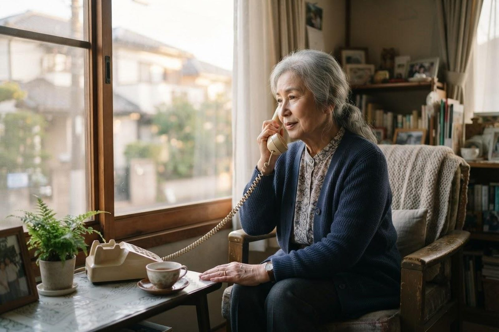

離れて暮らす親がひとり暮らしです。何かあったときが心配です。
A. 回答離れているとできることが限られ、電話をかけるたびに不安になるものだと思います。見守りには「人が定期的に訪ねる」「機器で様子を知る」「サービスを入れて人の目を増やす」という3つの方向があります。どれか一つで完璧にするのは難しいので、組み合わせるのが現実的です。あわせて、まだ元気なうちに介護保険を申請しておくと、いざというときの動きが早くなります。

人の目を増やす
- デイサービス：週に何回か通うだけで、専門職が定期的に様子を見ることになります。変化に気づいてもらえるのが大きな利点です。
- ホームヘルパー：家事の支援に加えて、部屋の状態や食事の様子から変化が見えます。
- 配食サービス：手渡しの形をとるものは、届けるたびに安否の確認になります。
- ご近所・民生委員：連絡先を交換しておくと、異変に気づいたときに知らせてもらえます。
- ケアマネジャー：月に一度は訪問します。心配ごとを共有しておいてください。
機器で様子を知る
- ボタンを押すと通報できる緊急通報の装置（自治体の事業として案内している場合があります）
- 電気ポットや冷蔵庫の使用を知らせる見守り機器
- 人の動きを感知するセンサー、扉の開閉を知らせる機器
- ご本人が持ちやすい携帯電話やタブレット、通話しやすい機器
機器は便利ですが、ご本人が監視されていると感じてしまうと、かえって関係がこじれることがあります。何のために置くのかを説明し、納得を得たうえで導入してください。
先に備えておけること
- 介護保険を申請しておく：認定には時間がかかります。必要になってからでは間に合いません。
- かかりつけ医を決めておく：普段の状態を知っている医師がいると、急なときの判断が早くなります。
- 連絡網をつくる：ご近所、ケアマネジャー、医療機関の連絡先を一枚にまとめ、冷蔵庫に貼っておきます。
- お薬手帳と保険証の場所を決める：救急のときにすぐ持ち出せる場所へ。
- 本人の希望を聞いておく：もしものときにどうしてほしいかを、元気なうちに話しておきます。
すぐに確認・受診をご検討ください
- 連絡がつかない、約束していた電話に出ない
- 転倒したが「大丈夫」と言っている（骨折や頭部の打撲が隠れていることがあります）
- 鍋を焦がした跡がある、ガスの消し忘れがあった
- 急に話が通じなくなった、別人のようにぼんやりしている
早めのご相談をおすすめします
- 冷蔵庫に傷んだ食品がたまっている、同じものばかり買っている
- 体重が減ってきた、服が汚れたままになっている
- 郵便物や請求書が開封されずに積まれている
- 知らない業者の契約書や、覚えのない商品がある
相談先
まずは親御さんがお住まいの地区の高齢者支援センターへご相談ください。倉敷市にお住まいであれば、市内25か所のセンターが担当地区ごとに対応しています。離れて暮らすご家族からの電話相談も受け付けています。
当院では訪問診療・訪問看護を行っているほか、デイサービス・訪問介護・小規模多機能ホーム「こはる日和」、かしわじま居宅介護支援センター、サービス付高齢者向け住宅「メディケアビレッジかしわじま」を運営しています。医療と介護のどちらの窓口からでもご相談いただけます。
本ページは一般的な情報提供を目的としています。介護保険の制度は改正されることがあり、手続きや金額は年度・自治体によって異なります。最新の内容は倉敷市（介護保険課）または担当のケアマネジャーにご確認ください。ご不明な点はお電話（086-525-0600）にてお問い合わせください。
離れて暮らすご家族からのご相談も、お電話でお受けしています。
最終更新：2026年8月26日